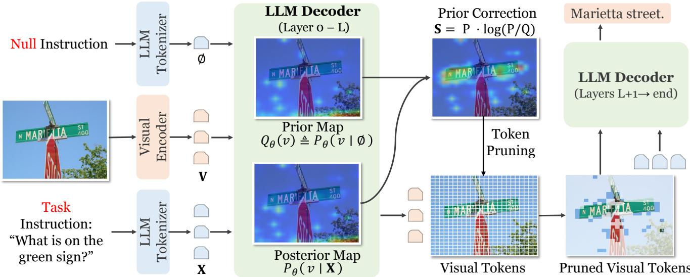

Figureure 1 · Left: Visualization of text-to-visual attention maps across LLM decodiFigure 1. Left: Visualization of text-to-visual attention maps across LLM decoding layers for a sample instruction (“What is the person doing in this image?”). (a) Null instruction: even without textual input, the model consistently attends to certain instruction-agnostic regions, revealing a strong model-induced prior. (b) Task instruction: attention distribution is partially influenced by the model-induced prior. (c) Prior-corrected attention: by correcting the prior, the resulting attention better highlights instruction-conditioned regions. Right: schematic illustration of our idea. A null token estimates the prior attention while the instruction produces the posterior attention within the same attention block; their contrast yields a prior-corrected signal used for visual token selection.这张可视化用来解释 Accelerating Multimodal Large Language Models 学到的中间表征或对齐关系。重点看它是否支持正文里的机制判断。

Figureure 2 · Overview of PriorTRFigure 2. Overview of PriorTR. Given an input image and a task instruction, PriorTR performs a single forward pass up to layer L of the shared LLM decoder. At layer $L ,$ attention from the null token to visual tokens estimates the model-induced saliency prior, while attention from instruction tokens to visual tokens estimates the task-conditioned posterior. Visual tokens are then scored by their V-usable information contribution, and the top-K tokens are physically retained. The LLM decoder continues from layer $L { + 1 }$ using the pruned visual tokens to generate the final response, achieving efficient inference while preserving instruction-relevant visual evidence.这张图概括 Accelerating Multimodal Large Language Models 的整体方法流程。阅读时先看模块之间传递的训练信号，再看作者如何把目标拆成可优化的子问题。